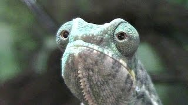

Origami Designs
Follow Us
From the above link 👆 you can know more about us. And you can follow Us.

Interesting Facts about Pigeon🐦. Click on the picture above👆 to make Pigeons🐦 from paper.
- Pigeons🐦are incredibly complex and intelligent animals.
- Pigeons🐦are renowned for their oustanding navigational abilities.
- Pigeons🐦have excellent hearing abilities.
- Pigeons🐦 have been present with humans since ages. The pigeons have been around humans for thousands of year.

Interesting Facts about Pandas🐼.Click on the picture above👆 to make pandas🐼 from paper.
- Giant pandas🐼 are good at climbing trees and can also swim.
- Pandas🐼 go from pink to white and black (or brown).
- Pandas🐼 are "lazy" — eating and sleeping make their day.
- An adult pandas🐼 can eat 12–38 kilos of bamboo per day!

What is so special about teddy bears🧸?.Click on the picture above👆 to make teddy bears🧸 from paper through a video.
- Teddy bears have a depth of character that other toys don't have, and in playing with one a child brings it to life. The bear helps to stimulate and develop their imagination. “Teddy bears encourage this type of imaginative play by their very nature, in a way a gadget or electronic toy can't.”

Interesting Facts about Camels🐫.Click on the picture above👆 to make Camels🐪 from paper through a video..
- Baby camels🐪 are born without humps. They are however able to run within hours of birth. They call to their mothers with a lamb-like “baa” sound. Mother and child camel pairings are extremely close, staying together for several years.
- Camel’s 🐪 ears are small and hairy. However their sense of hearing is also extremely strong.
- In Arab cultures the camel🐪 symbolises patience, tolerance and endurance.
- Asian camels🐪 have two humps whereas Arabian camels only have one.

Interesting Facts about chameleon🦎.Click on the picture above👆 to make chameleon🦎 from paper through a video..
- CHAMELEON🦎 FEET WORK LIKE SALAD TONGS.
- ALMOST HALF OF CHAMELEON🦎 KNOWN SPECIES LIVE IN MADAGASCAR.
- CHAMELEON🦎 SKIN CRYSTALS ENABLE THEM TO CHANGE COLOR AT WILL.

- CHAMELEON🦎 EYES CAN SWIVEL AROUND IN TWO DIFFERENT DIRECTIONS SIMULTANEOUSLY. Press on the image through which you can see their eyes moving simultaneously.

Interesting Facts about Cicada🦟.Click on the picture above👆 to make Cicada🦟 from paper.
- Cicadas🦟 can survive a huge fall as babies, or nymphs
- They're true bugs🦟
- Their short adult life is not unusual for bugs🦟.
- Most have red-orange eyes🦟.
Thank you for watching🙏.Click on the picture above👆. Something nice is there!!.